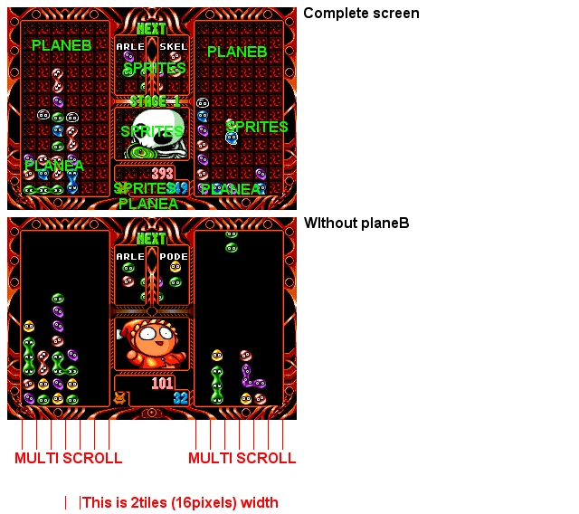

Pic 7 - 2Tiles/2Tiles V Scrolling
For the vertical scroll, the values are stored in a special *external* register (not in the VRAM like the H scroll). So the maximal scroll precision is 2tiles/2tiles (for some technical/memory reasons).
PuyoPuyo uses fortunately the V scroll register to scroll 2tiles/2tiles verticaly (when you play the game, you understand why ;).
